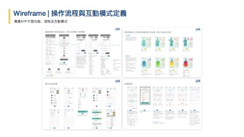
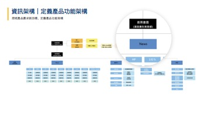
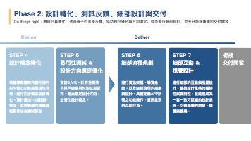

A luxury fashion agency with 30+ years in the market needed its first mobile app. I led the research and product design — building a privacy-first study framework for high-net-worth clients, uncovering a product north star insight, and delivering a cross-brand digital experience with usability validation.

A leading luxury fashion distributor in Taiwan — representing multiple internationally acclaimed designer brands for over 30 years — decided to digitalise its VIP client services. The business operates with strictly tiered membership thresholds and purchasing cycles governed by biannual marquee events. Their clientele is high-net-worth, highly brand-loyal, and accustomed to white-glove, in-person service.
The challenge was structural: how do you design a digital product that preserves the exclusivity and privacy these clients expect, while also enabling cross-brand discovery and reducing operational burden on sales associates — starting from zero?
Working with VIP clientele ruled out standard research formats. These are individuals who expect discretion — in-person lab sessions or third-party platforms were non-starters. I designed a remote contextual inquiry framework structured as a virtual observation room: participants were de-identified and given full privacy assurance, while internal stakeholders — brand managers, sales directors — observed in real time and posed questions through me as moderator.
This served a dual purpose: generating the qualitative depth we needed while converting business sceptics into research advocates. When a brand director watches a VIP client describe their frustrations directly, the case for product investment becomes self-evident.
Beyond validating existing feature assumptions, the research surfaced a critical emergent behaviour: clients were photographing every item in their wardrobe one by one and sharing these images with sales associates via messaging apps — to discuss styling, request holds on new arrivals, and coordinate purchases. They had manually built a "digital wardrobe" through ad-hoc photo albums, entirely outside any official channel.
This insight — turning a physical wardrobe into a structured digital record, extended with styling inspiration and purchase history — became the product's North Star concept. Although scoped beyond the MVP, it provided a concrete strategic foundation: a digital wardrobe that naturally drives product discovery and guided purchasing, reducing associate workload while increasing client-initiated conversion.

The distributor operates multiple brands, yet VIP clients tend to develop strong loyalty to one label. A core business objective was cross-brand exposure without disrupting the client's preferred aesthetic relationship. I designed a multi-brand curation module within the information architecture — surfacing complementary brands through contextual relevance rather than generic browsing, drawing on seasonal collections and existing taste profiles rather than promotional logic.
The membership system is complex: tiered spending thresholds, seasonal milestone events, evolving reward structures. Presenting all of this simultaneously would overwhelm users and contradict the refined tone the brand embodies. I applied a progressive disclosure strategy — surfacing only the most relevant membership status and upcoming milestone prominently, with full tier detail accessible on demand. This reduced cognitive load while preserving the user's sense of control over information depth.

Before development, I led comprehensive usability testing across the full task flow — covering icon comprehension, navigation patterns, in-app copy, and feature discoverability. Testing identified and resolved navigation barriers, streamlined multi-step processes, and confirmed that first-time users could complete core tasks without assistance.
This project confirmed what I believe about research at its best: it isn't just about informing design decisions — it's about creating shared understanding across an organisation. The virtual observation room didn't just protect participant privacy; it made findings visceral and undeniable for business leaders who would otherwise rely on assumption.
The most powerful deliverable wasn't the wireframes or the usability report. It was the moment a brand director heard a VIP client's voice — and understood exactly why the product needed to exist.
Client identity, brand names, and specific performance metrics have been anonymised per confidentiality agreement. I am happy to discuss the full project in depth during a conversation.